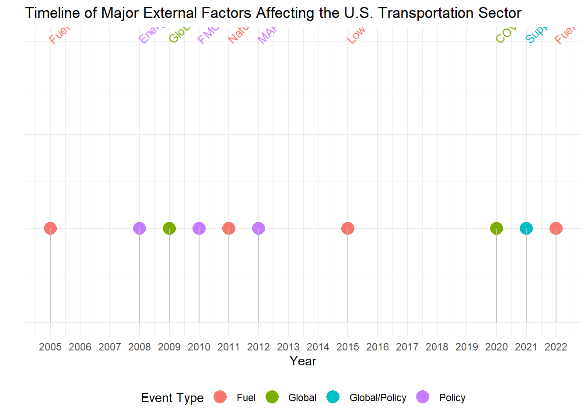
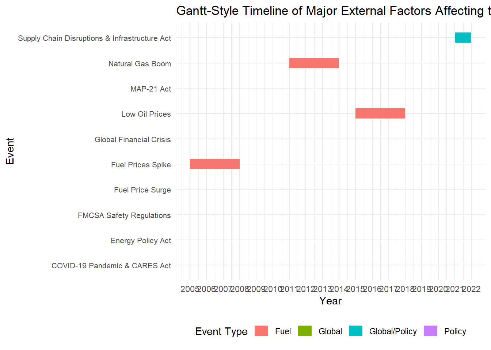

[1] "...1"
[2] "TOTAL U.S. GDP"
[3] "For-hire transportation services GDP, total"
[4] "Air transportation...4"
[5] "Rail transportation...5"
[6] "Water transportation...6"
[7] "Truck transportation...7"
[8] "Transit and ground passenger transportation...8"
[9] "Pipeline transportation...9"
[10] "Other transportation and support activities...10"
[11] "Warehousing and storage...11"
[12] "Percent of U.S. GDP"
[13] "For-hire transportation services"
[14] "Air transportation...14"
[15] "Rail transportation...15"
[16] "Water transportation...16"
[17] "Truck transportation...17"
[18] "Transit and ground passenger transportation...18"
[19] "Pipeline transportation...19"
[20] "Other transportation and support activities...20"
[21] "Warehousing and storage...21"
[22] "Percent of for-hire transportation services GDP"
[23] "Air transportation...23"
[24] "Rail transportation...24"
[25] "Water transportation...25"
[26] "Truck transportation...26"
[27] "Transit and ground passenger transportation...27"
[28] "Pipeline transportation...28"
[29] "Other transportation and support activities...29"
[30] "Warehousing and storage...30"
Filter Data for Timeline Events
Since I’m focused on creating a timeline of external factors like fuel prices and policy changes, I’ll need to isolate specific years and events to include in the timeline. I’ll add a subset of relevant data and then create a separate data frame for these events.
# Create a data frame with specific events for the timelineevents <-data.frame(year =c(2005, 2008, 2009, 2010, 2011, 2012, 2015, 2020, 2021, 2022),label =c("Fuel Prices Spike","Energy Policy Act","Global Financial Crisis","FMCSA Safety Regulations","Natural Gas Boom","MAP-21 Act","Low Oil Prices","COVID-19 Pandemic & CARES Act","Supply Chain Disruptions & Infrastructure Act","Fuel Price Surge" ),type =c("Fuel", "Policy", "Global", "Policy", "Fuel", "Policy", "Fuel", "Global", "Global/Policy", "Fuel"))
Plot the Timeline
# Plot the timeline with corrected line width aestheticggplot(events, aes(x = year, y =1, color = type)) +geom_point(size =5) +# Points for each eventgeom_segment(aes(x = year, xend = year, y =1, yend =0.9), color ="gray", linewidth =0.5) +# Adjusted to use linewidthgeom_text(aes(label = label), angle =45, hjust =0, nudge_y =0.2, size =3.5) +# Event labelsscale_x_continuous(breaks =seq(2005, 2022, by =1)) +# Set x-axis breaks for each yearlabs(title ="Timeline of Major External Factors Affecting the U.S. Transportation Sector",x ="Year",y ="" ) +theme_minimal() +theme(axis.text.y =element_blank(), # Remove y-axis textaxis.ticks.y =element_blank(), # Remove y-axis tickslegend.position ="bottom" ) +guides(color =guide_legend(title ="Event Type")) # Legend for event types

Modify the Data for a Gantt-Style Chart
# Load necessary librarieslibrary(ggplot2)library(dplyr)# Define the data with start and end years for Gantt-style visualizationevents <-data.frame(event =c("Fuel Prices Spike", "Energy Policy Act", "Global Financial Crisis","FMCSA Safety Regulations", "Natural Gas Boom", "MAP-21 Act","Low Oil Prices", "COVID-19 Pandemic & CARES Act", "Supply Chain Disruptions & Infrastructure Act", "Fuel Price Surge" ),type =c("Fuel", "Policy", "Global", "Policy", "Fuel", "Policy", "Fuel", "Global", "Global/Policy", "Fuel"),start_year =c(2005, 2008, 2009, 2010, 2011, 2012, 2015, 2020, 2021, 2022),end_year =c(2008, 2008, 2009, 2010, 2014, 2012, 2018, 2020, 2022, 2022))
Create the Gantt-Style Timeline Chart
# Gantt-style timeline plotggplot(events, aes(x = start_year, xend = end_year, y = event, yend = event, color = type)) +geom_segment(size =5) +# Create horizontal bars for each eventscale_x_continuous(breaks =seq(2005, 2022, by =1)) +# Set x-axis breaks for each yearlabs(title ="Gantt-Style Timeline of Major External Factors Affecting the U.S. Transportation Sector",x ="Year",y ="Event" ) +theme_minimal() +theme(axis.text.y =element_text(size =8), # Adjust y-axis text size for readabilitylegend.position ="bottom" ) +guides(color =guide_legend(title ="Event Type")) # Legend for event types
Warning: Using `size` aesthetic for lines was deprecated in ggplot2 3.4.0.
ℹ Please use `linewidth` instead.

Key Points to Observe
Event Types: Each row represents a specific event, with different colors indicating the type of factor (e.g., fuel-related, policy-related, or global events). This visualization helps quickly identify the kinds of events that have significantly impacted the transportation sector over the years.
Event Duration: The length of each horizontal bar shows the duration of each event:
Short-Term Events (like specific policy implementations) have shorter bars, indicating a limited time impact.
Long-Term Events (like the shale gas boom or supply chain disruptions) have longer bars, indicating they affected the transportation sector over multiple years.
Overlapping Events: Look for events that occur around the same time. For example, if a fuel price surge coincides with a global event (like the COVID-19 pandemic), it may indicate a compounded effect on the transportation sector during that period. Overlapping policy changes and fuel-related events (such as the 2012 MAP-21 Act and low oil prices in 2015) could suggest a favorable environment for sector growth or cost reduction.
Major Disruptions: The COVID-19 pandemic in 2020 and the subsequent supply chain disruptions in 2021-2022 stand out, as they span multiple categories (global events, policy responses) and have broad implications across transportation modes.
Trends by Type: Fuel-Related Events: Periodic spikes and drops in fuel prices (2005-2008, 2015, 2022) indicate volatility that directly affects transportation costs.
Policy Events: Regulatory changes and infrastructure investments, like the FMCSA Safety Regulations (2010) and the Infrastructure Act (2021), tend to support long-term improvements but may come with short-term compliance costs.
Global Events: Economic downturns (2009 financial crisis) and the COVID-19 pandemic have had significant impacts, shown by bars for 2009 and 2020, signaling major demand shocks or disruptions.
Overall Insights: The Gantt-style timeline provides a broad overview of the external pressures and opportunities the transportation sector has faced. By analyzing the interaction between fuel volatility, policy changes, and global disruptions, you can better understand how these factors shape sector trends and resilience. This visual will make it easier to discuss how specific types of external factors impact transportation modes differently and the sector’s response to multi-year trends.